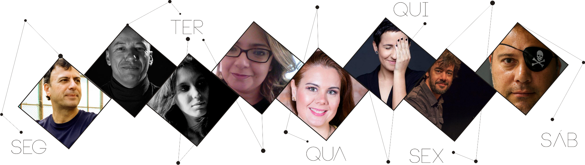

SAMBA - Semana de Produção Multimídia
☰

Dia 24 de abril - segunda - dia de Design Gráfico: Aula Magna com - Morandini. O tema de seu bate papo: "Entendeu ou quer que eu design?"
Dia 25 de abril - terça - dia de cinema e video: Wellington Pingo, Ana Paula Silva e Naiani Soares. Tema: Produção e distribuição: a importância do planejamento da carreira do conteúdo audiovisual
Dia 26 de abril - quarta - dia de web, games, novas mídias: Ludmilla Rossi da Mkt Virtual. Tema: "Produção multimídia da vida real: juntando design, conteúdo, audiovisual e games debaixo do mesmo teto"
Dia 27 de abril - quinta - dia de trilha sonora: Tony Berchmans. Tema: "A MÚSICA DO FILME - Das Origens aos Novos Olhares sobre a Música de Cinema"
Dia 28 de abril - sexta - dia de Design Editorial: Maíra Miranda Tema: "Do conteúdo à forma: metodologia criativa no design editorial — ou muito além de "fazer caber".
Dia 29 de abril- sábado - manhã - Dia de Fotografia: Marcelo Justo. Tema: "A fotografia instantânea na Comunicação Atual".
Local: Anfiteatro 1 do Bloco D - 19h - Evento aberto ao público - Entrada 1 kilo de alimento não perecível (exceto sal) para o Programa Dividindo para Somar.
Dia 24 de abril - segunda - dia de Design Gráfico: Aula Magna com - Morandini. O tema de seu bate papo: "Entendeu ou quer que eu design?"
Dia 25 de abril - terça - dia de cinema e video: Wellington Pingo, Ana Paula Silva e Naiani Soares. Tema: Produção e distribuição: a importância do planejamento da carreira do conteúdo audiovisual
Dia 26 de abril - quarta - dia de web, games, novas mídias: Ludmilla Rossi da Mkt Virtual. Tema: "Produção multimídia da vida real: juntando design, conteúdo, audiovisual e games debaixo do mesmo teto"
Dia 27 de abril - quinta - dia de trilha sonora: Tony Berchmans. Tema: "A MÚSICA DO FILME - Das Origens aos Novos Olhares sobre a Música de Cinema"
Dia 28 de abril - sexta - dia de Design Editorial: Maíra Miranda Tema: "Do conteúdo à forma: metodologia criativa no design editorial — ou muito além de "fazer caber".
Dia 29 de abril- sábado - manhã - Dia de Fotografia: Marcelo Justo. Tema: "A fotografia instantânea na Comunicação Atual".
Local: Anfiteatro 1 do Bloco D - 19h - Evento aberto ao público - Entrada 1 kilo de alimento não perecível (exceto sal) para o Programa Dividindo para Somar.